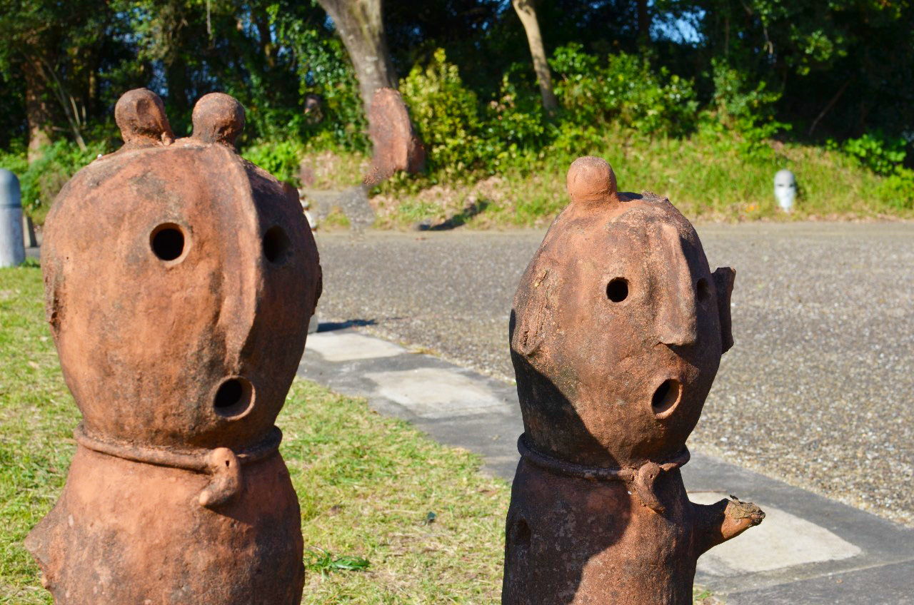

西都原古墳群
コノハナノサクヤヒメの陵墓である九州地方で最大の前方後円墳、女狭穂塚とニニギノミコトの陵墓である日本最大の帆立貝形古墳、男狭穂塚のある国の特別史跡に指定された古墳群です。


周囲は大自然に包まれており、300余基の古墳数を有しています。古代の雰囲気を味わいながら憩い楽しむ場、レクリエーションの場として多くの人に利用されています。
古墳だけでなく、花の名所としても有名で四季の花に迎えられながら、古代の風を肌で感じることができます。
基本情報
| 住所 | 〒881-0005 宮崎県西都市大字三宅 |
|---|---|
| 電話番号 | 0983-41-1557(西都市観光協会) |
| 営業時間 | なし |
| 休業日 | なし |
| 料金 | 無料 |
| アクセス | 東九州自動車道 西都ＩＣより約10分 |
| 駐車場 | 700台 |
| Webサイト | 西都原古墳群 |